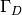
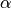

Nitsche’s method for dirichlet and contact boundary conditions¶
GetFEM++ provides a generic implementation of Nitche’s method which allows to account for Dirichlet type or contact with friction boundary conditions in a weak sense without the use of Lagrange multipliers.
The method is very attractive because it transforms a Dirichlet boundary condition into a weak term similar to a Neumann boundary condition.
However, this advantage is at the cost that the implementation of Nitche’s method is model dependent, since it requires an approximation of the corresponding Neumann term.
In order to add a boundary condition with Nitsche’s method on a variable of a model, the corresponding brick needs to have access to an approximation of the Neumann term of all partial differential terms applied to this variable.
In the following, considering a variable  , we will denote by
, we will denote by
the sum of all Neumann terms on this variable.
Note that the Neumann term will often depend on the variable but it may also depend on other variables of the model.
This is the case for instance for mixed formulations of incompressible elasticity.
The Neumann terms depend also frequently on some parameters of the model (elasticity coefficients ...) but this is assumed to be contained in its expression.
For instance, if there is a Laplace term ( ), applied on the variable , the Neumann term will be where
), applied on the variable , the Neumann term will be where  is the outward unit normal on the considered boundary.
If represents the displacements of a deformable body, the Neumann term will be , where is the stress tensor depending on the consitutive law.
Of course, in that case also depends on some material parameters.
If additionally a mixed incompressibility brick is added with a variable
is the outward unit normal on the considered boundary.
If represents the displacements of a deformable body, the Neumann term will be , where is the stress tensor depending on the consitutive law.
Of course, in that case also depends on some material parameters.
If additionally a mixed incompressibility brick is added with a variable  denoting the pressure, the Neumann term on will depend on in the following way:
denoting the pressure, the Neumann term on will depend on in the following way:
In order to allow a generic implementation in which the brick imposing Nitsche’s method will work for every partial differential term applied to the concerned variables, each brick adding a partial differential term to a model is required to give its expression via an assembly string (weak form language).
These expressions are utilized in a special method of the model object:
expr = md.Neumann_term(variable, region)
which allows to automatically derive an expression for the sum of all Neumann terms, by scanning the expressions provided by all partial differential term bricks and performing appropriate manipulations. Of course it is required that all volumic bricks were added to the model prior to the call of this method. The derivation of the Neumann term works only for second order partial differential equations. A generic implementation for higher order pde would be more complicated.
Generic Nitsche’s method for a Dirichlet condition¶
Assume that the variable is considered and that one wants to prescribe the condition
on a part  of the boundary of the considered domain.
Here  is considered equal to one in the scalar case or can be either the identity matrix in the vectorial case either a singular matrix having only 1 or 0 as eigenvalues.
This allow here to prescribe only the normal or tangent component of .
For instance if one wants to prescribe only the normal component, will be chosen to be equal to where is the outward unit normal on .
is considered equal to one in the scalar case or can be either the identity matrix in the vectorial case either a singular matrix having only 1 or 0 as eigenvalues.
This allow here to prescribe only the normal or tangent component of .
For instance if one wants to prescribe only the normal component, will be chosen to be equal to where is the outward unit normal on .
Nitsche’s method for prescribing this Dirichlet condition consists in adding the following term to the weak formulation of the problem
where  and
and  are two parameters of Nitsche’s method and
are two parameters of Nitsche’s method and  is the test function corresponding to .
The parameter can be chosen positive or negative.
is the test function corresponding to .
The parameter can be chosen positive or negative.  corresponds to the more standard method which leads to a symmetric tangent term in standard situations,
corresponds to the more standard method which leads to a symmetric tangent term in standard situations,  corresponds to a non-symmetric method which has the advantage of a reduced number of terms and not requiring the second derivatives of in the nonlinear case, and is a kind of skew-symmetric method which ensures an inconditonal coercivity (which means independent of ) at least in standard situations.
The parameter is a kind of penalization parameter (although the method is consistent) which is taken to be where
corresponds to a non-symmetric method which has the advantage of a reduced number of terms and not requiring the second derivatives of in the nonlinear case, and is a kind of skew-symmetric method which ensures an inconditonal coercivity (which means independent of ) at least in standard situations.
The parameter is a kind of penalization parameter (although the method is consistent) which is taken to be where  is taken uniform on the mesh and
is taken uniform on the mesh and  is the diameter of the element .
Note that, in standard situations, except for the parameter has to be taken sufficiently small in order to ensure the convergence of Nitsche’s method.
is the diameter of the element .
Note that, in standard situations, except for the parameter has to be taken sufficiently small in order to ensure the convergence of Nitsche’s method.
The bricks adding a Dirichlet condition with Nitsche’s method to a model are the following:
getfem::add_Dirichlet_condition_with_Nitsche_method
(model &md, const mesh_im &mim, const std::string &varname,
const std::string &Neumannterm,
const std::string &gamma0name, size_type region,
scalar_type theta = scalar_type(1),
const std::string &dataname = std::string());
This function adds a Dirichlet condition on the variable varname and the mesh region region. This region should be a boundary. Neumannterm is the expression of the Neumann term (obtained by the Green formula) described as an expression of the weak form language. This term can be obtained with md.Neumann_term(varname, region) once all volumic bricks have been added to the model. The Dirichlet condition is prescribed with Nitsche’s method. dataname is the optional right hand side of the Dirichlet condition. It could be constant or described on a fem; scalar or vector valued, depending on the variable on which the Dirichlet condition is prescribed. gamma0name is the Nitsche’s method parameter. theta is a scalar value which can be positive or negative. theta = 1 corresponds to the standard symmetric method which is conditionnaly coercive for gamma0 small. theta = -1 corresponds to the skew-symmetric method which is inconditionnaly coercive. theta = 0 is the simplest method for which the second derivative of the Neumann term is not necessary even for nonlinear problems. Returns the brick index in the model.
getfem::add_normal_Dirichlet_condition_with_Nitsche_method
(model &md, const mesh_im &mim, const std::string &varname,
const std::string &Neumannterm,
const std::string &gamma0name, size_type region,
scalar_type theta = scalar_type(1),
const std::string &dataname = std::string());
This function adds a Dirichlet condition to the normal component of the vector (or tensor) valued variable varname and the mesh region region. This region should be a boundary. Neumannterm is the expression of the Neumann term (obtained by the Green formula) described as an expression of the weak form language. This term can be obtained with md.Neumann_term(varname, region) once all volumic bricks have been added to the model. The Dirichlet condition is prescribed with Nitsche’s method. dataname is the optional right hand side of the Dirichlet condition. It could be constant or described on a fem. gamma0name is the Nitsche’s method parameter. theta is a scalar value which can be positive or negative. theta = 1 corresponds to the standard symmetric method which is conditionnaly coercive for gamma0 small. theta = -1 corresponds to the skew-symmetric method which is inconditionnaly coercive. theta = 0 is the simplest method for which the second derivative of the Neumann term is not necessary even for nonlinear problems. Returns the brick index in the model. (This brick is not fully tested)
getfem::add_generalized_Dirichlet_condition_with_Nitsche_method
(model &md, const mesh_im &mim, const std::string &varname,
const std::string &Neumannterm,
const std::string &gamma0name, size_type region, scalar_type theta,
const std::string &dataname, const std::string &Hname);
This function adds a Dirichlet condition on the variable varname and the mesh
region region.
This version is for vector field. It prescribes a condition
 where is a matrix field. The region should be a
boundary. This region should be a boundary. Neumannterm
is the expression of the Neumann term (obtained by the Green formula)
described as an expression of the weak form language. This term can be obtained with
md.Neumann_term(varname, region) once all volumic bricks have
been added to the model. The Dirichlet
condition is prescribed with Nitsche’s method.
CAUTION : the matrix H should have all eigenvalues equal to 1 or 0.
dataname is the optional
right hand side of the Dirichlet condition. It could be constant or
described on a fem. gamma0name is the
Nitsche’s method parameter. theta is a scalar value which can be
positive or negative. theta = 1 corresponds to the standard symmetric
method which is conditionnaly coercive for gamma0 small.
theta = -1 corresponds to the skew-symmetric method which is
inconditionnaly coercive. theta = 0 is the simplest method
for which the second derivative of the Neumann term is not necessary
even for nonlinear problems. Hname is the data
corresponding to the matrix field H. It has to be a constant matrix
or described on a scalar fem. Returns the brick index in the model.
(This brick is not fully tested)
where is a matrix field. The region should be a
boundary. This region should be a boundary. Neumannterm
is the expression of the Neumann term (obtained by the Green formula)
described as an expression of the weak form language. This term can be obtained with
md.Neumann_term(varname, region) once all volumic bricks have
been added to the model. The Dirichlet
condition is prescribed with Nitsche’s method.
CAUTION : the matrix H should have all eigenvalues equal to 1 or 0.
dataname is the optional
right hand side of the Dirichlet condition. It could be constant or
described on a fem. gamma0name is the
Nitsche’s method parameter. theta is a scalar value which can be
positive or negative. theta = 1 corresponds to the standard symmetric
method which is conditionnaly coercive for gamma0 small.
theta = -1 corresponds to the skew-symmetric method which is
inconditionnaly coercive. theta = 0 is the simplest method
for which the second derivative of the Neumann term is not necessary
even for nonlinear problems. Hname is the data
corresponding to the matrix field H. It has to be a constant matrix
or described on a scalar fem. Returns the brick index in the model.
(This brick is not fully tested)
Generic Nitsche’s method for contact with friction condition¶
We describe here the use of Nitsch’s method to prescribe a contact with Coulomb friction condition in the small deformations framework. This corresponds to a weak integral contact condition which as some similarity with the ones which use Lagrange multipliers describe in the corresponding section, see Weak integral contact condition
In order to simplify notations, let use denote by the following map which corresponds to a couple of projections:
This application make the projection of the normal part of  on and the tangential part on the ball of center
on and the tangential part on the ball of center  and radius , where is the friction coefficient.
and radius , where is the friction coefficient.
Using this, and considering that the sliding velocity is approximated by where the expression of  and depend on the time integration scheme used (see Weak integral contact condition), Nitsche’s term for contact with friction reads as:
where is the contact boundary, is the Neumann term which represents here the stress at the contact boundary and  is the matrix
is the matrix
Note that for the variant with a majority of terms vanish.
The following function adds a contact condition with or without Coulomb friction on the variable varname_u and the mesh boundary region. Neumannterm is the expression of the Neumann term (obtained by the Green formula) described as an expression of the weak form language. This term can be obtained with md.Neumann_term(varname, region) once all volumic bricks have been added to the model. The contact condition is prescribed with Nitsche’s method. The rigid obstacle should be described with the data dataname_obstacle being a signed distance to the obstacle (interpolated on a finite element method). gamma0name is the Nitsche’s method parameter. theta is a scalar value which can be positive or negative. theta = 1 corresponds to the standard symmetric method which is conditionnaly coercive for gamma0 small. theta = -1 corresponds to the skew-symmetric method which is inconditionnaly coercive. theta = 0 is the simplest method for which the second derivative of the Neumann term is not necessary. The optional parameter dataexpr_friction_coeff is the friction coefficient which could be any expression of the weak form language. Returns the brick index in the model.:
getfem::add_Nitsche_contact_with_rigid_obstacle_brick
(model &md, const mesh_im &mim, const std::string &varname_u,
const std::string &Neumannterm,
const std::string &expr_obs, const std::string &dataname_gamma0,
scalar_type theta_,
std::string dataexpr_friction_coeff,
const std::string &dataname_alpha,
const std::string &dataname_wt,
size_type region);

目次
前のトピックへ
Example of a complete Poisson problem
次のトピックへ
Download
Main documentations
- GetFEM++ User documentation
- Python Interface
- Matlab Interface
- Scilab Interface
- Gmm++
- GetFEM++ project